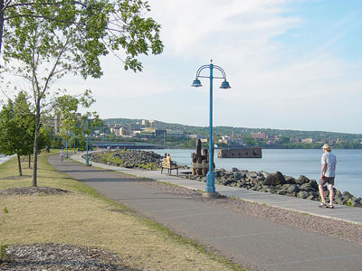
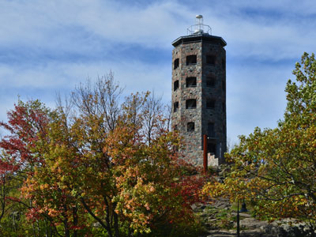
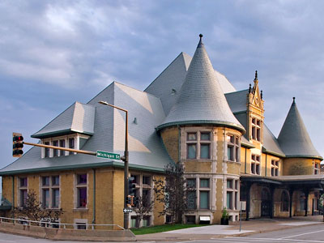

Duluth, MN Travel Guide
Port city situated on the north shore of Lake Superior at the westernmost point of the Great Lakes, Duluth is the largest metropolitan area and by far the largest and busiest port on the Great Lakes
Places to See in Duluth

Jonathunder, CC BY-SA 3.0, via Wikimedia Commons; Image Size Adjusted

Aerial Lift Bridge
Landmark in the port city of Duluth, Minnesota began life in 1905 as the United States' first transporter bridge where span was converted to a vertical-lift bridge and continues to operate today

No machine-readable author provided. Jakes19 assumed (based on copyright claims)., Public domain, via Wikimedia Commons; Image Size Adjusted

Canal Park
Waterfront district featuring scenic Lake Superior views, a pedestrian-friendly shoreline, public parks, shopping, dining, and access to some of the area's most iconic maritime attractions.

August Schwerdfeger, CC BY 4.0, via Wikimedia Commons; Image Size Adjusted

Enger Tower
Five-story stone observation tower offering panoramic views of Lake Superior, the harbor, surrounding hills, and the urban waterfront from one of the area's highest scenic overlooks.

McGhiever, CC BY-SA 4.0, via Wikimedia Commons; Image Size Adjusted

Lake Superior Railroad Museum
Railroad museum focusing on railroading in the Lake Superior region and operates the North Shore Scenic Railroad, which runs excursion trains using historic rail equipment from the museum collection
Chrisographer, CC BY-SA 4.0, via Wikimedia Commons; Image Size Adjusted

Minnesota Point
Narrow freshwater sandbar featuring sandy beaches, scenic walking trails, harbor views, and a unique coastal environment that separates a major shipping harbor from Lake Superior.
Overview
Duluth, Minnesota, is a port city on the western tip of Lake Superior, built on steep hills that rise from the harbor, and it is the gateway to the North Shore. It is known for the Aerial Lift Bridge, which raises to let ocean-going ships pass into the harbor, for being the farthest inland seaport in the world, and for the cool breezes of the lake, which keep summers mild. The city is also famous for its scenic views, its outdoor recreation, and its brewing and music scene.
Visitors come to Duluth for Canal Park and the Aerial Lift Bridge, for the Lakewalk along the shoreline, and for the Lake Superior Railroad Museum. They also come for hiking, mountain biking, skiing, and fishing, for the Grandma's Marathon each June, and for a base for the North Shore Scenic Drive, which leads to state parks, waterfalls, and the Boundary Waters. The city's cool summers make it a popular escape from heat farther south.
History
The Ojibwe (Anishinaabe) people lived around the western end of the lake for centuries before the French explorer Daniel Greysolon, Sieur du Lhut, arrived in 1679, and the city is named for him. Fur trading was followed by the discovery of iron ore on the Mesabi Range in the 1890s, which turned Duluth into a major port for shipping ore, grain, and coal, and the Duluth Ship Canal, completed in 1871, opened the harbor. The Aerial Lift Bridge was built in 1905 and converted to a lift bridge in 1929, and the city has a rich history of shipping, railroads, and lumber. The port's traffic has declined from its peak, and tourism and healthcare are now important to the economy.
Sightseeing and Popular Landmarks
Canal Park is the center of tourist activity, with shops, restaurants, hotels, and the Lakewalk, and the Aerial Lift Bridge raises several times a day, with the ship schedule posted for visitors. Enger Tower is a five-story stone observation tower with views of the city and harbor, and Minnesota Point, also called Park Point, is the longest freshwater sandbar in the world, with beaches and a lighthouse. Other attractions include the Glensheen Historic Estate, the SS William A. Irvin ore boat, the Great Lakes Aquarium, and the Skyline Parkway, which gives views of the lake from the hillside.
Culture and Museums
The Lake Superior Railroad Museum, in the restored Union Depot, has one of the largest collections of railroad equipment in the country, and the Lake Superior Maritime Visitor Center tells the story of the Great Lakes shipping industry. Glensheen is a 1908 mansion on the lake with formal gardens, and the Duluth Art Institute and the Duluth Playhouse have exhibits and performances. The Duluth Folk Festival and the Bayfront Blues Festival are among summer music events, and Bob Dylan was born in Duluth in 1941.
Parks
Duluth has more than 100 parks and a large network of trails, including the Lakewalk, a paved path that runs for 7 miles along the lake, and the Superior Hiking Trail, which starts near the city and follows the ridge of the North Shore. Lester Park, Chester Bowl, and Hartley Nature Center offer trails and waterfalls, and the Piedmont and Spirit Mountain areas have mountain biking and skiing. Gooseberry Falls, Split Rock Lighthouse, and other state parks on the North Shore are within an hour's drive.
Seasons and Weather
Duluth has a humid continental climate that is cool because of Lake Superior. Summers are mild, with highs in the 70s°F, and the lake can bring fog and cool breezes, while winters are long and very cold, with highs in the teens and 20s°F and more than 80 inches of snow. Summer is the busiest season, with Grandma's Marathon in June, and fall color along the North Shore peaks in late September and early October.
This article uses material from Wikipedia as well as information from official tourism and institutional sources. Key references include Visit Duluth, Lake Superior Railroad Museum, Glensheen, Duluth Parks, Minnesota Department of Natural Resources, and National Weather Service Duluth. Wikipedia material is from the article "Duluth, Minnesota", and is available under the Creative Commons Attribution-Share-Alike License 3.0.